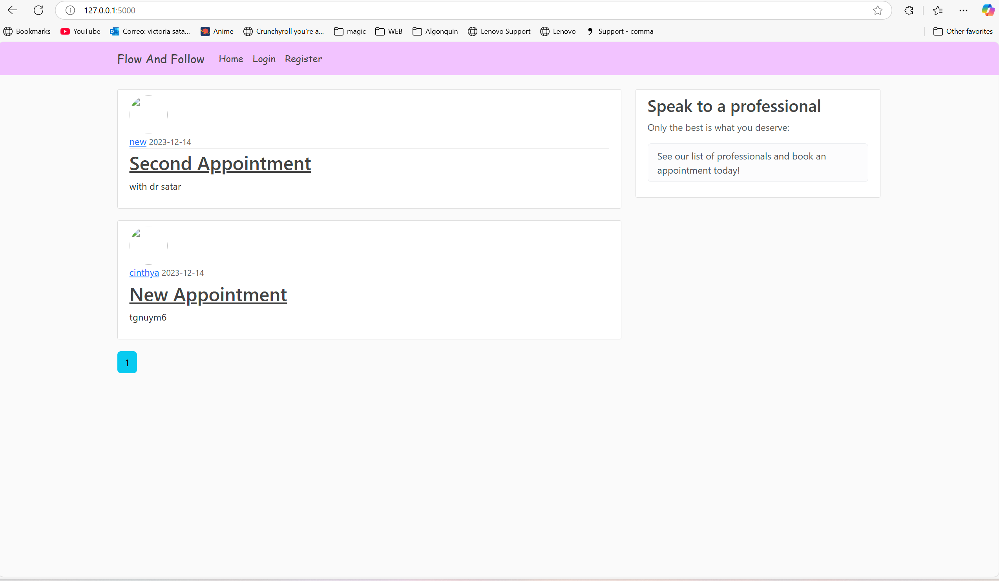
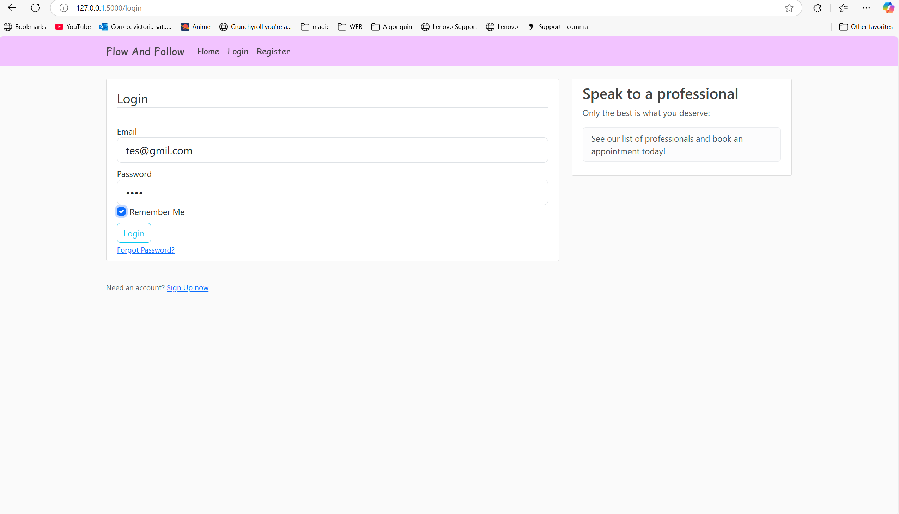
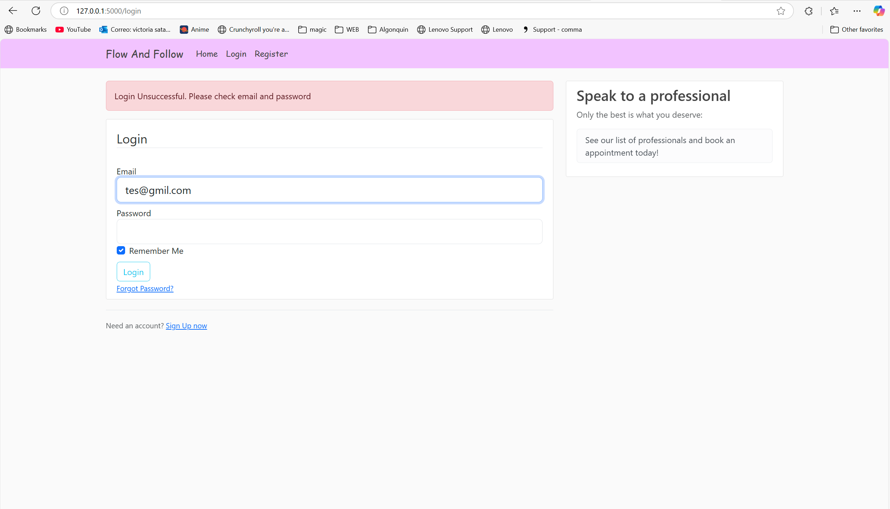
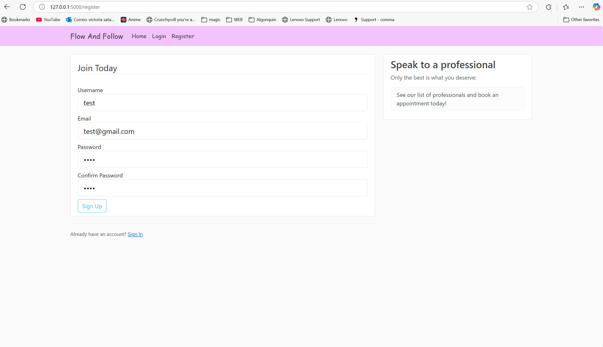

Flow and Follow
Web Development CourseProject Overview
Flow and Follow is a blog-styled web application developed during my Web Development course. It serves as a platform for women to connect with professionals and seek advice on various health-related topics.
Key Features
- User authentication and profile management
- Blog post creation and management
- Professional consultation scheduling
- Community interaction and support
- Responsive design for all devices
Technologies Used
HTML5
CSS3
JavaScript
Python
Flask
SQLite
Screenshots



